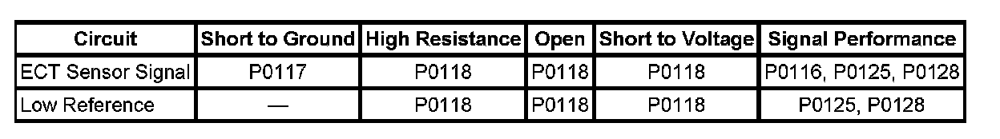
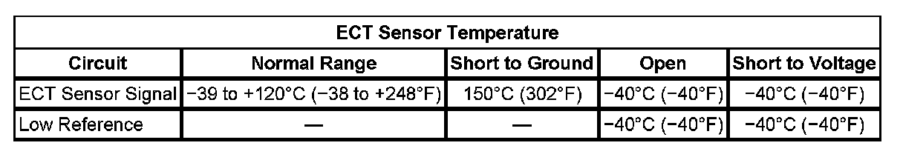

P0117
DTC P0117 or P0118
DTC DESCRIPTORS
DTC P0117
Engine Coolant Temperature (ECT) Sensor Circuit Low Voltage
DTC P0118
Engine Coolant Temperature (ECT) Sensor Circuit High Voltage
DIAGNOSTIC FAULT INFORMATION

Perform the Diagnostic System Check - Vehicle prior to using this diagnostic procedure. Initial Inspection and Diagnostic Overview
TYPICAL SCAN TOOL DATA
ECT Sensor Temperature:

CIRCUIT/SYSTEM DESCRIPTION
The engine coolant temperature (ECT) sensor is a variable resistor that measures the temperature of the engine coolant. The engine control module (ECM) supplies 5 volts to the ECT signal circuit and supplies a ground to the low reference circuit.
CONDITIONS FOR RUNNING THE DTC
P0117
- The engine is running for more than 10 seconds. OR
- The ignition is ON when the intake air temperature (IAT) is less than 50°C (122°F).
- This DTC runs continuously within the enabling conditions.
P0118
- The engine is running for more than 10 seconds. OR
- The ignition is ON when the IAT is more than 0°C (32°F).
- This DTC runs continuously within the enabling conditions.
CONDITIONS FOR SETTING THE DTC
P0117
The ECM detects that the ECT is more than 149°C (300°F) for more than 5 seconds.
P0118
The ECM detects that the ECT is less than -39°C (-38°F) for more than 5 seconds.
ACTION TAKEN WHEN THE DTC SETS
DTCs P0117 and P0118 are Type B DTCs.
CONDITIONS FOR CLEARING THE MIL/DTC
DTCs P0117 and P0118 are Type B DTCs.
CIRCUIT/SYSTEM VERIFICATION
1. CAUTION: Under pressure, the temperature of the solution in the radiator can be considerably higher, without boiling. Removing the radiator cap while the engine is hot (pressure is high), will cause the solution to boil instantaneously, with explosive force. The solution will spew out over the engine, fenders, and the person removing the cap. Serious bodily injury may result. Flammable antifreeze, such as alcohol, is not recommended for use at any time. Flammable antifreeze could cause a serious fire.
Turn OFF the ignition.
2. Inspect the cooling system surge tank for the proper engine coolant level. Refer to Cooling System Leak Testing and Draining and Filling Cooling System (Vac-N-Fill). Component Tests and General Diagnostics Service and Repair
3. Turn ON the ignition, with the engine OFF.
4. Use the scan tool to verify the proper operation of the engine cooling system fans.
5. Turn OFF the ignition.
6. Verify the proper heat range, and the operation of the thermostat. Refer to Thermostat Diagnosis. Component Tests and General Diagnostics
CIRCUIT/SYSTEM TESTING
IMPORTANT: All electrical components and accessories must be turned OFF and allowed to power down.
1. Ignition OFF, disconnect the ECT harness connector at the ECT sensor.
2. Ignition OFF, test for less than 5 ohms of resistance between the low reference circuit and ground.
- If greater than the specified range, test the low reference circuit for an open/high resistance. If the circuit tests normal, replace the ECM.
3. Ignition ON, verify the scan tool ECT Sensor parameter is less than -39°C (-38°F).
- If greater than the specified range, test the signal circuit for a short to ground. If the circuit tests normal, replace the ECM.
4. Install a 3A fused jumper wire between the signal circuit and the low reference circuit. Verify the scan tool ECT Sensor parameter is greater than 149°C (300°F).
- If less than the specified range, test the signal circuit for a short to voltage or an open/high resistance. If the circuit tests normal, replace the ECM.
5. If all circuits test normal, test or replace the ECT sensor.
COMPONENT TESTING
Measure and record the resistance of the ECT sensor at various ambient temperatures, then compare those measurements to the Temperature vs Resistance Table. Refer to Temperature Versus Resistance.
REPAIR INSTRUCTIONS
Perform the Diagnostic Repair Verification after completing the diagnostic procedure.
- Engine Coolant Temperature Sensor Replacement
- Control Module References for ECM replacement, setup, and programming. Verification Tests